The Hitchhiker's Guide to PGP
PGP (Pretty Good Privacy) is an encryption software that is used to protect data privacy and secure communication between two parties. It allows its users to securely exchange data and digital transmissions, by providing encryption and decryption tools.
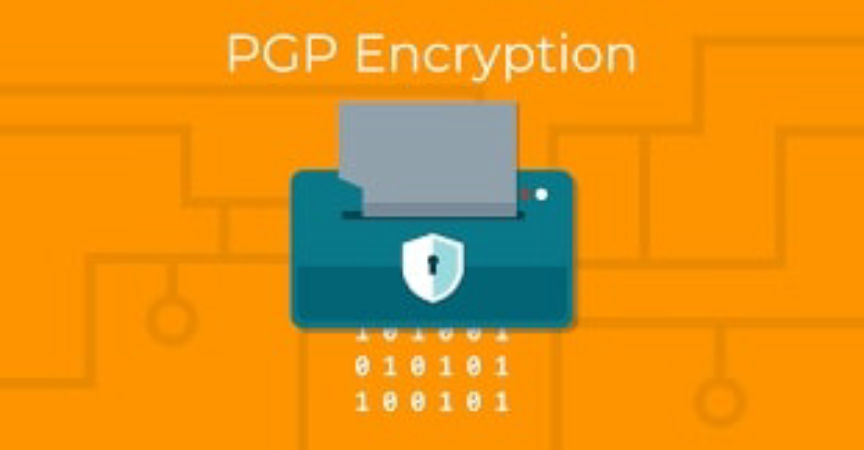
To provide encryption and decryption, PGP uses public key cryptography. Public key cryptography is an asymmetric encryption scheme that uses two different keys, the public key that encrypts data and the private key for decryption.
You are free to share your public key with anyone while keeping your private key secret. Anyone with your public key can use it to encrypt information that only you can decrypt using your private key.
To use PGP encryption, you first need to generate a public and private key pair using a PGP software, such as Kleopatra. You can then share your public key with others, who can then use it to encrypt data they want to send to you.
Here's how PGP message encryption works:
A user generates a pair of keys, a public key, and a private key. The public key is shared with others while the private key is kept secret.
To send an encrypted message, the sender uses the recipient's public key to encrypt the message. This ensures that only the intended recipient can decrypt the message.
The recipient then uses their private key to decrypt the encrypted message.
For additional security, the sender can use their private key to add a digital signature to the message. The signature acts as proof that the message was written and sent by the key owner.
On receiving a signed message, the recipient can use the sender's public key to verify the digital signature of a message. A valid signature proves that the message was sent by the sender and has not been changed. The slightest change in the original message, even by just one character will cause the verification process to fail.
Here's a step-by-step guide to how you can do all this with Kleopatra:
Go here and download Gpg4win (GNU Privacy Guard for Windows) installer. Kleopatra, a certificate manager for OpenPGP, is one of the software contained in Gpg4win.
For Linux users, get Kleopatra here.
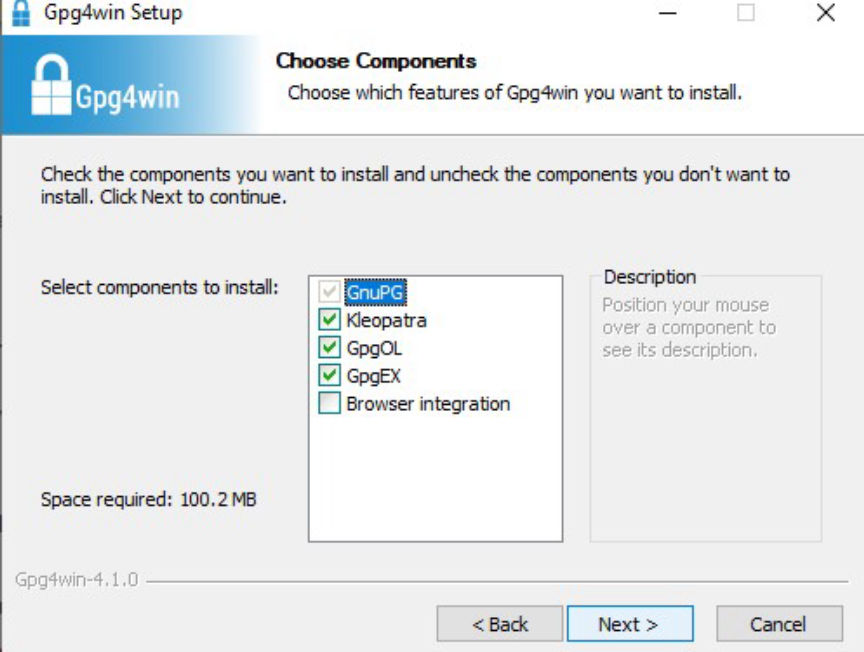
Install the program and run it.
Once the installation finishes, Click on New Key Pair.
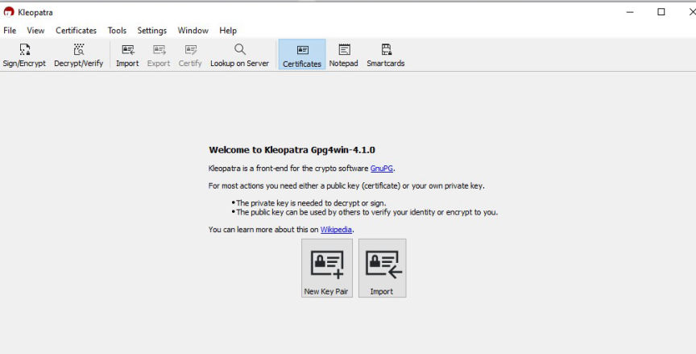
You will then have the option to set a name to be associated with your PGP public key. You can also enter your email address and protect your key with a passphrase. The passphrase will make sure you're the only one with access to your private key.
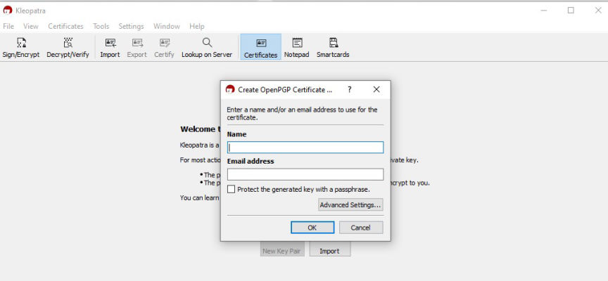
Click OK on the success popup.
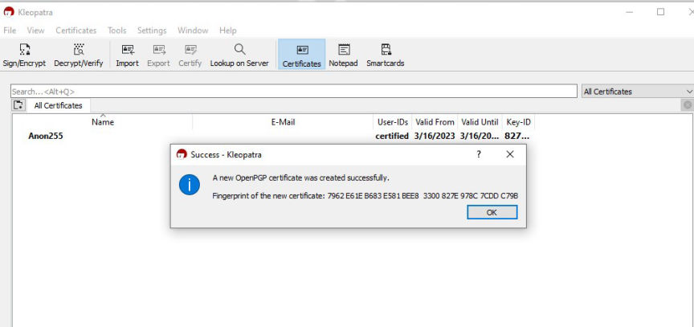
Next, double-click on the certificate you just created and then click on "Export."
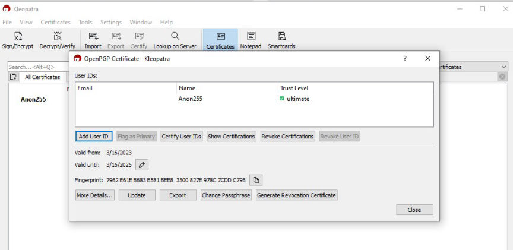
This will open a popup with your public key. You can copy it, save it and share it with other people.
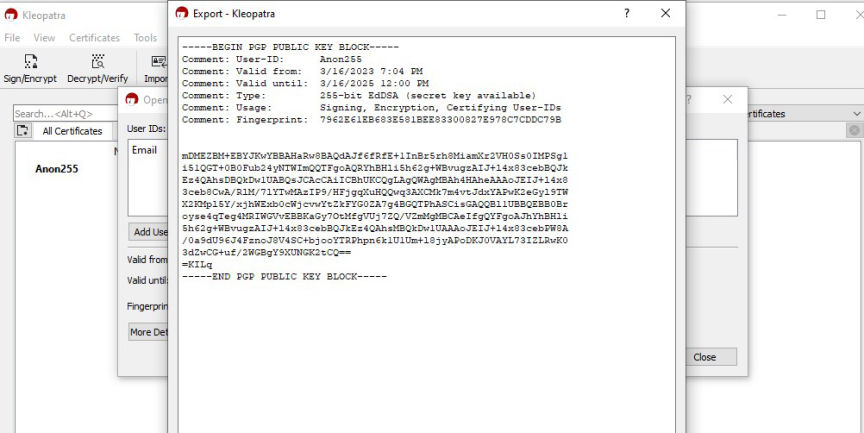
You can delete the lines that begin with "comment" if you do not wish to share the information with others.
To encrypt messages you send to others, you will need to import their PGP public keys.
Copy the public key you want to import and paste it into the Notepad.
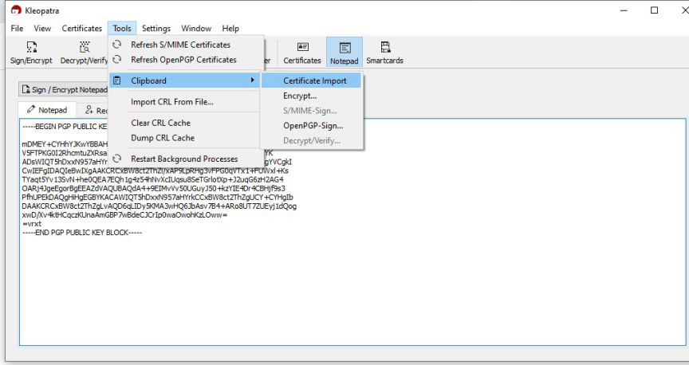
Next, click on Tools, then Clipboard followed by Certificate Import.
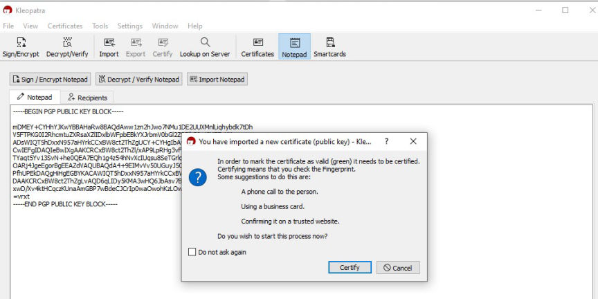
On the popup, click on Certify. The information displayed on the popup that follows can help you verify that you are importing the correct public key.
Click Certify, followed by OK on the next popup.
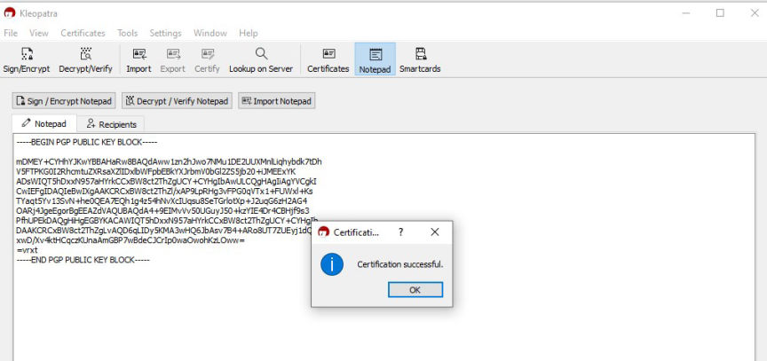
Copy the plain text message you want to import and paste it into the Notepad.

Next, click on Tools, then Clipboard followed by Encrypt. On the popup, click on Add Recipient.
Then select the public key you want to encrypt the message with and click on OK.
[img]Recipient added[/img]
Click on Next to start the encryption process. Click on OK after the encryption completes.
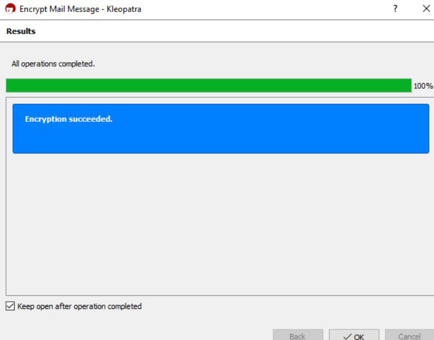
The encrypted message is saved in your clipboard, you should paste and send it to the intended recipient as it is.
To decrypt a message encrypted with your PGP public key, paste the whole message as it is on the Notepad. You should then click on Decrypt/Verify Notepad.
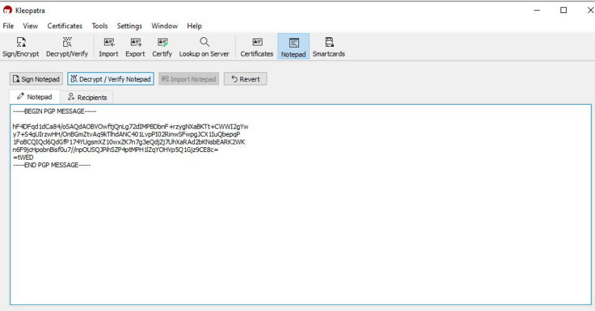
The decryption process will only be successful if the message was encrypted with your public key.
Paste the message you want to sign on the Notepad. Then click on recipients. Unchecking the Encrypt for me and Encrypt for others checkboxes, will result in an unencrypted message.
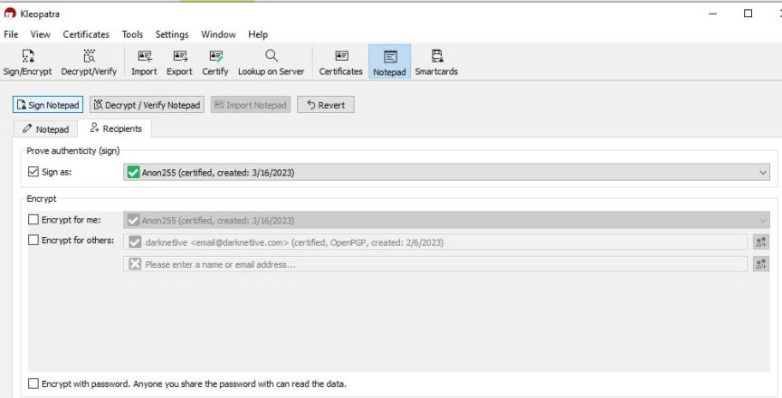
Next, click on Sign Notepad. The signed message will be on the Notepad once the signing succeeds.
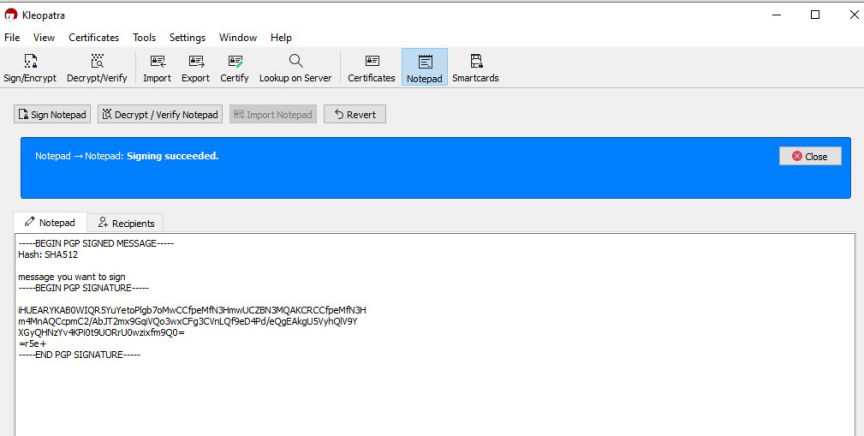
To verify a signed message you will need to have imported the sender's public key.
Paste the message into the Notepad.
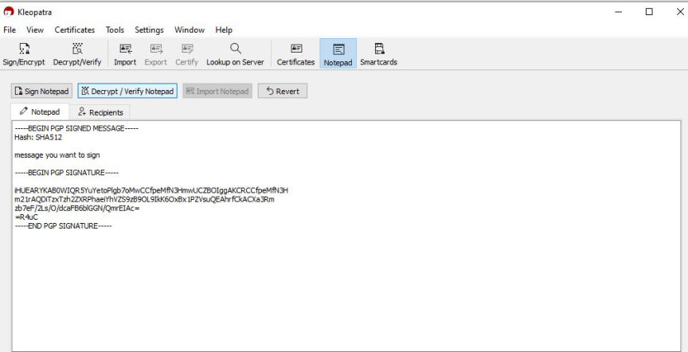
Click on the Decrypt/Verify Notepad tab to verify the message.
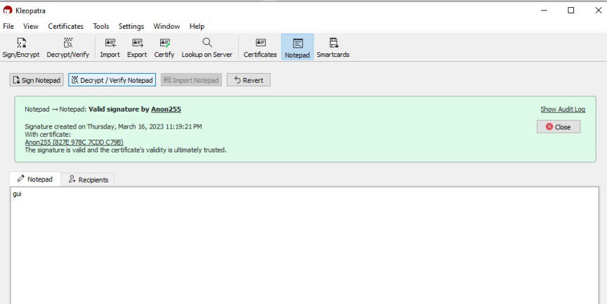
The message will be successfully verified if the signature is valid.
Basically, PGP encryption secures communications by:
Keeping private keys secure is crucial in ensuring the integrity of the encryption process is preserved. Remember to back up your keys and secure the backups.
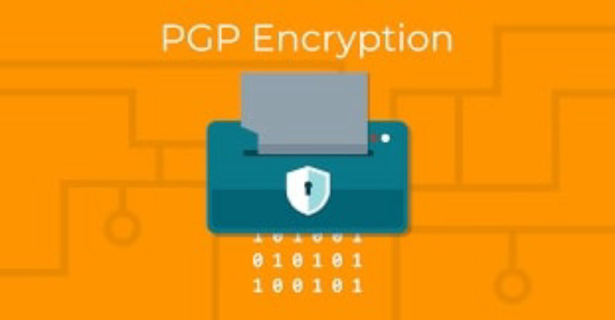
PGP encryption
To provide encryption and decryption, PGP uses public key cryptography. Public key cryptography is an asymmetric encryption scheme that uses two different keys, the public key that encrypts data and the private key for decryption.
You are free to share your public key with anyone while keeping your private key secret. Anyone with your public key can use it to encrypt information that only you can decrypt using your private key.
To use PGP encryption, you first need to generate a public and private key pair using a PGP software, such as Kleopatra. You can then share your public key with others, who can then use it to encrypt data they want to send to you.
Here's how PGP message encryption works:
Key generation
A user generates a pair of keys, a public key, and a private key. The public key is shared with others while the private key is kept secret.
Encryption
To send an encrypted message, the sender uses the recipient's public key to encrypt the message. This ensures that only the intended recipient can decrypt the message.
Decryption
The recipient then uses their private key to decrypt the encrypted message.
Signing
For additional security, the sender can use their private key to add a digital signature to the message. The signature acts as proof that the message was written and sent by the key owner.
Verification
On receiving a signed message, the recipient can use the sender's public key to verify the digital signature of a message. A valid signature proves that the message was sent by the sender and has not been changed. The slightest change in the original message, even by just one character will cause the verification process to fail.
Here's a step-by-step guide to how you can do all this with Kleopatra:
Download and Install Kleopatra
Go here and download Gpg4win (GNU Privacy Guard for Windows) installer. Kleopatra, a certificate manager for OpenPGP, is one of the software contained in Gpg4win.
For Linux users, get Kleopatra here.
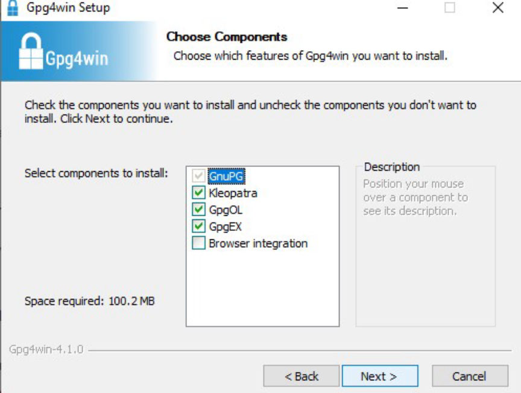
Install Kleopatra
Install the program and run it.
Generate a PGP Key Pair
Once the installation finishes, Click on New Key Pair.
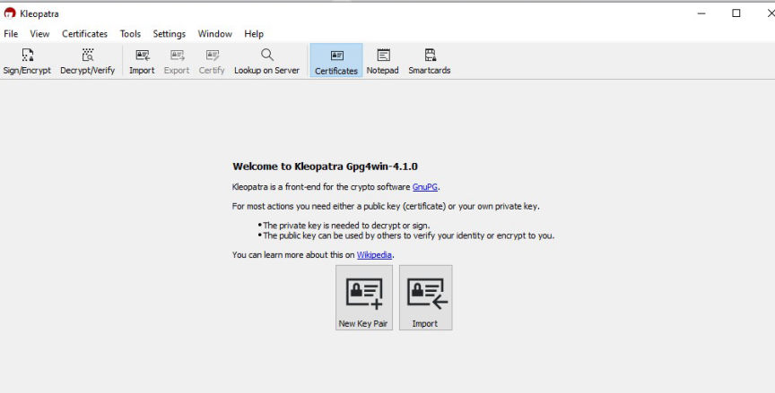
New Key Pair Generation
You will then have the option to set a name to be associated with your PGP public key. You can also enter your email address and protect your key with a passphrase. The passphrase will make sure you're the only one with access to your private key.
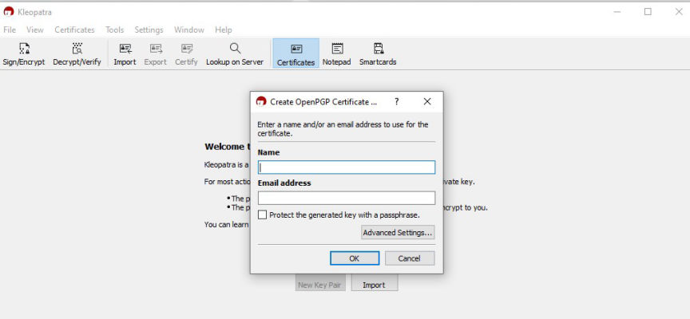
Enter name, email address, and passphrase
Click OK on the success popup.
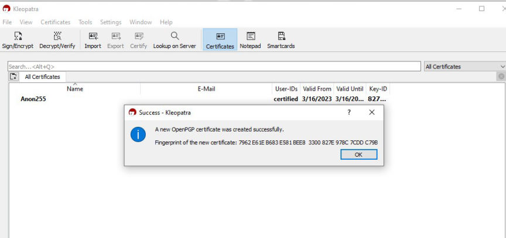
Key successfully created
Next, double-click on the certificate you just created and then click on "Export."
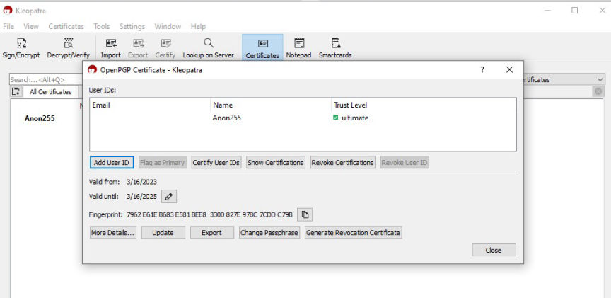
Export your public key
This will open a popup with your public key. You can copy it, save it and share it with other people.
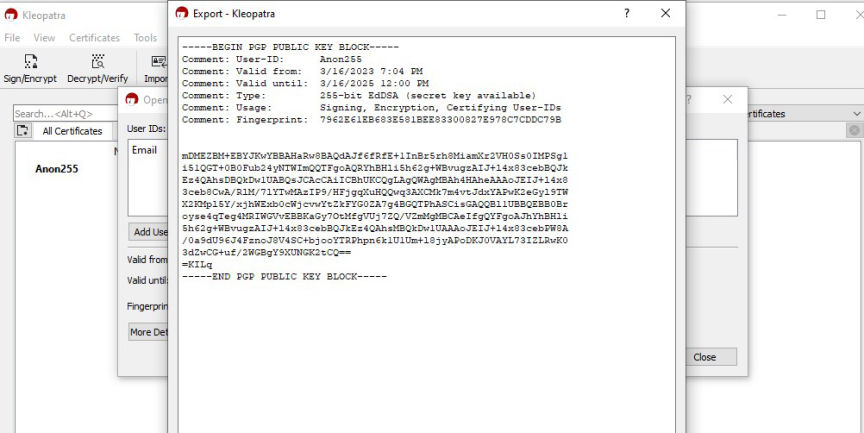
The public key
You can delete the lines that begin with "comment" if you do not wish to share the information with others.
Import Public Keys
To encrypt messages you send to others, you will need to import their PGP public keys.
Copy the public key you want to import and paste it into the Notepad.
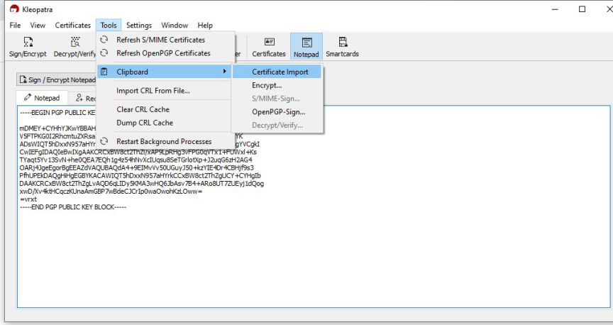
Begin the import process
Next, click on Tools, then Clipboard followed by Certificate Import.
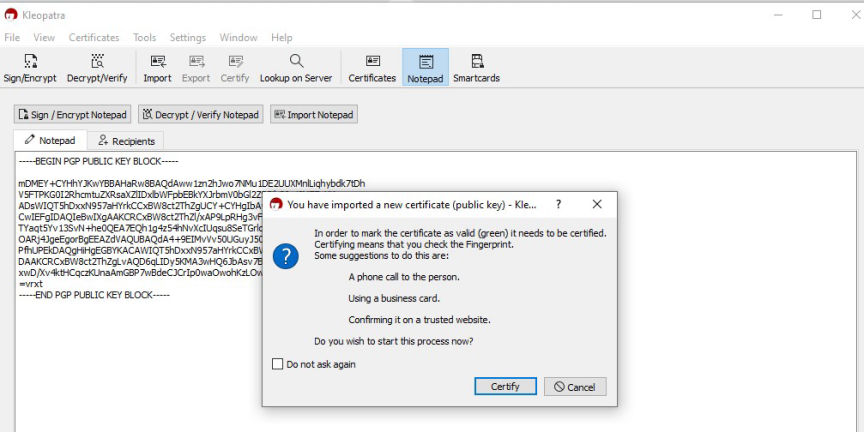
Certify the import
On the popup, click on Certify. The information displayed on the popup that follows can help you verify that you are importing the correct public key.
Click Certify, followed by OK on the next popup.
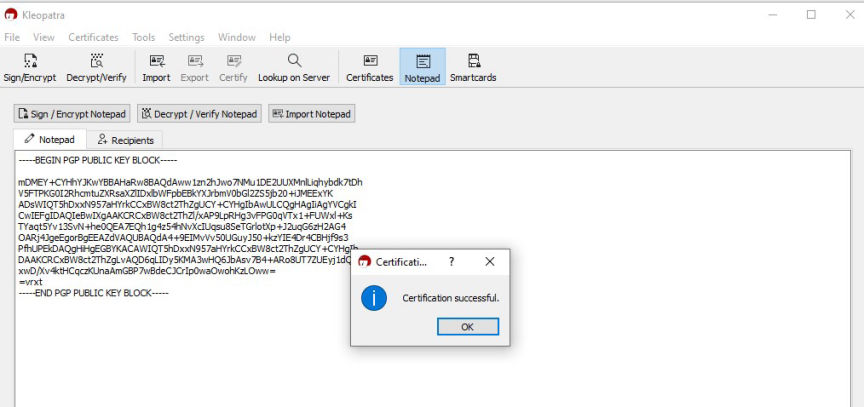
Key successfully imported
Encrypt a Message
Copy the plain text message you want to import and paste it into the Notepad.
Begin encryption
Next, click on Tools, then Clipboard followed by Encrypt. On the popup, click on Add Recipient.
Then select the public key you want to encrypt the message with and click on OK.
[img]Recipient added[/img]
Click on Next to start the encryption process. Click on OK after the encryption completes.
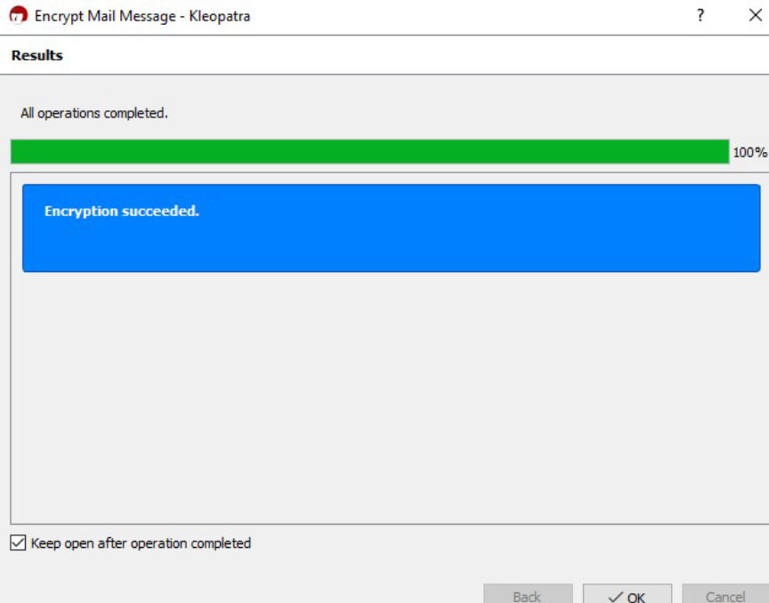
Encryption completed
The encrypted message is saved in your clipboard, you should paste and send it to the intended recipient as it is.
Decrypt a Message
To decrypt a message encrypted with your PGP public key, paste the whole message as it is on the Notepad. You should then click on Decrypt/Verify Notepad.
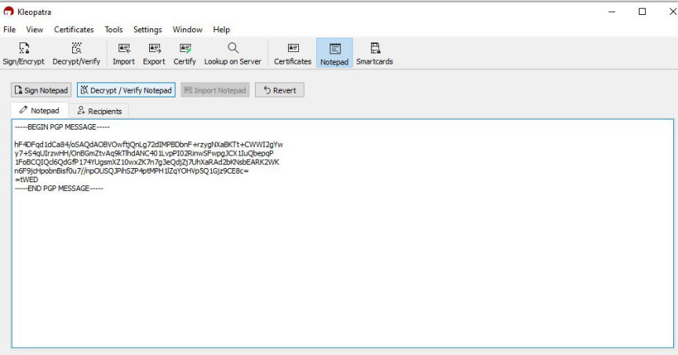
Decrypt a message encrypted with your public key
The decryption process will only be successful if the message was encrypted with your public key.
Sign a Message
Paste the message you want to sign on the Notepad. Then click on recipients. Unchecking the Encrypt for me and Encrypt for others checkboxes, will result in an unencrypted message.
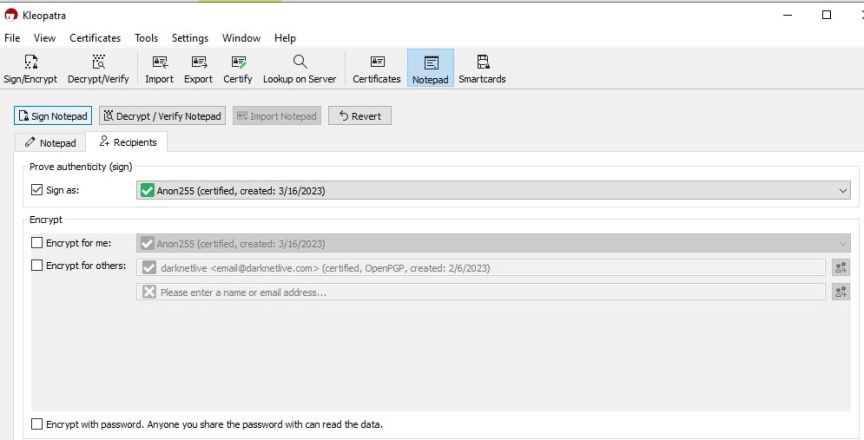
Sign a message with your keys
Next, click on Sign Notepad. The signed message will be on the Notepad once the signing succeeds.
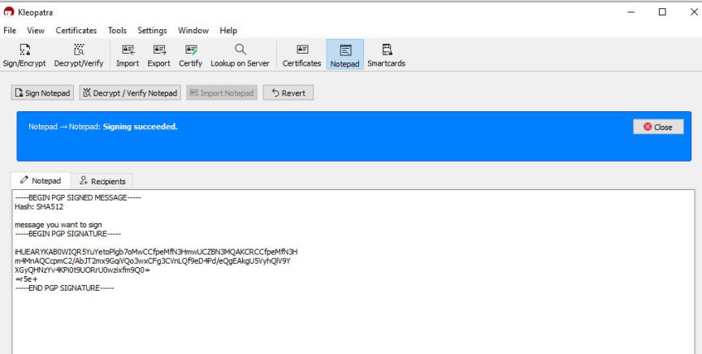
Message signed
Verify a Signed Message
To verify a signed message you will need to have imported the sender's public key.
Paste the message into the Notepad.
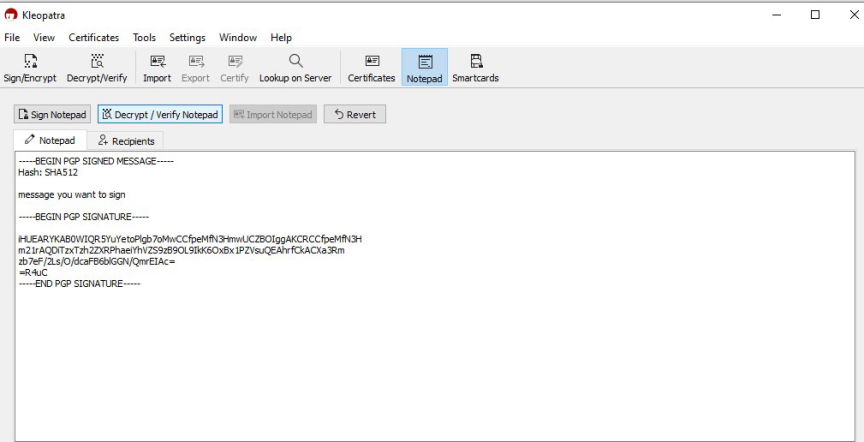
Verify signed message
Click on the Decrypt/Verify Notepad tab to verify the message.
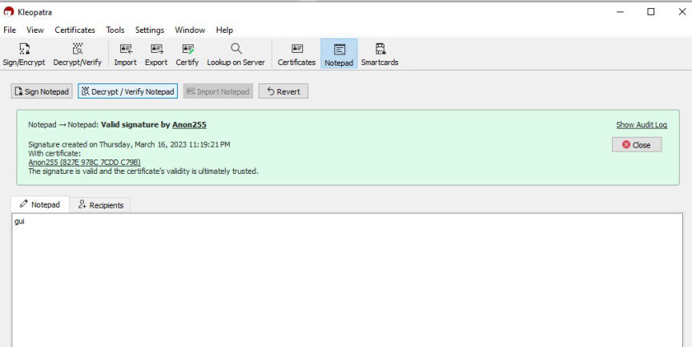
Successfully verified signature
The message will be successfully verified if the signature is valid.
Basically, PGP encryption secures communications by:
- Preventing the modification and interception of data during transfer.
- Ensuring the transferred data is protected from unauthorized access.
- Allowing recipients to verify the authenticity of senders.
Keeping private keys secure is crucial in ensuring the integrity of the encryption process is preserved. Remember to back up your keys and secure the backups.